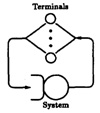
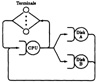

Baskett, Chandy, Muntz, and Palacios (1975) showed that product form solutions exist for an even broader class of networks. This class consists of networks satisfying the following criteria:
- 1. Service Disciplines: All service centers have one of the following four types of service disciplines: First Come, First Served (FCFS), Processor Sharing (PS), Infinite Servers (ISs or delay centers), and Last Come, First Served Preemptive Resume (LCFS-PR).
- 2. Job Classes: The jobs belong to a single class while awaiting or receiving service at a service center but may change classes and service centers according to fixed probabilities at the completion of a service request.
- 3. Service Time Distributions: At FCFS service centers, the service time distributions must be identical and exponential for all classes of jobs. At other service centers, where the service times should have probability distributions with rational Laplace transforms, different classes of jobs may have different distributions.
- 4. State-dependent Service: The service time at a FCFS service center can depend only on the total queue length of the center. The service time for a class at PS, LCFS-PR, and IS centers can also depend on the queue length for that class, but not on the queue length of other classes. Moreover, the overall service rate of a subnetwork can depend on the total number of jobs in the subnetwork.
- 5. Arrival Processes. In open networks, the time between successive arrivals of a class should be exponentially distributed. No bulk arrivals are permitted. The arrival rates may be state dependent. A network may be open with respect to some classes of jobs and closed with respect to other classes of jobs.
Networks satisfying these criteria are referred to as BCMP networks after the authors of the criteria.
Denning and Buzen (1978) further extended the class of product form networks to non-Markovian networks with the following conditions:
- 1. Job Flow Balance: For each class, the number of arrivals to a device must equal the number of departures from the device.
- 2. One-Step Behavior: A state change can result only from single jobs entering the system, moving between pairs of devices in the system, or exiting from the system. This assumption asserts that simultaneous job moves will not be observed.
- 3. Device Homogeneity: A device’s service rate for a particular class does not depend on the state of the system in any way except for the total device queue length and the designated class’s queue length. This assumption implies the following:
- (a) Single-Resource Possession: A job may not be present (waiting for service or receiving service) at two or more devices at the same time.
- (b) No Blocking: A device renders service whenever jobs are present; its ability to render service is not controlled by any other device.
- (c) Independent Job Behavior: Interaction among jobs is limited to queueing for physical devices; for example, there should not be any synchronization requirements.
- (d) Local Information: A device’s service rate depends only on local queue length and not on the state of the rest of the system.
- (e) Fair Service: If service rates differ by class, the service rate for a class depends only on the queue length of that class at the device and not on the queue lengths of other classes. This means that the servers do not discriminate against jobs in a class depending on the queue lengths of other classes.
- (f) Routing Homogeneity: The job routing should be state independent.
In the last condition, the term routing is used to denote a job’s path in the network. The routing homogeneity condition implies that the probability of a job going from one device to another device does not depend upon the number of jobs at various devices.
The job flow balance assumption holds only in some observation periods. However, it is a good approximation for long observation intervals since the ratio of unfinished jobs to completed jobs is small.
32.3 QUEUEING NETWORK MODELS OF COMPUTER SYSTEMS
Two of the earliest queueing models of computer systems are the machine repairman model and the central server model shown in Figures 32.7 and 32.8, respectively. The machine repairman model, as the name implies, was originally developed for modeling machine repair shops. It has a number of working machines and a repair facility with one or more servers (repairmen). Whenever a machine breaks down, it is put in the queue for repair and serviced as soon as a repairman is available. Scherr (1967) used this model to represent a timesharing system with n terminals. Users sitting at the terminals generate requests (jobs) that are serviced by the system, which serves as a repairman. After a job is done, it waits at the user terminal for a random “think-time” interval before cycling again.

FIGURE 32.7 Machine repairman model of a computer system.

FIGURE 32.8 Central server model of a timesharing system.
The central server model shown in Figure 32.8 was introduced by Buzen (19173). The CPU in the model is the “central server” that schedules visits to other devices. After service at the I/O devices, the jobs return to the CPU for further processing and leave it when the next I/O is encountered or when the job is completed.
In computer systems modeling, we encounter three kinds of devices. Most devices have a single server whose service time does not depend upon the number of jobs in the device. Such devices are called fixed-capacity service centers. For example, the CPU in a system may be modeled as a fixed-capacity service center. Then there are devices that have no queueing, and jobs spend the same amount of time in the device regardless of the number of jobs in it. Such devices can be modeled as a center with infinite servers and are called delay centers or IS (infinite server). A group of dedicated terminals is usually modeled as a delay center. Finally, the remaining devices are called load-dependent service centers since their service rates may depend upon the load or the number of jobs in the device. A M/M/m queue (with m ≥ 2) is an example of a load-dependent service center. Its total service rate increases as more and more servers are used. A group of parallel links between two nodes in a computer network is an example of a load-dependent service center. Fixed-capacity centers and delay centers are considered in Chapters 34 and 35. Load-dependent centers are considered in Section 36.1. Unless specified otherwise, it is assumed that the service times for all servers are exponentially distributed.
In the next few chapters, we will describe a number of techniques to solve these queueing network models. The techniques are presented in the order of their complexity. The simplest technique is using operational analysis, and is presented in Chapter 33.
EXERCISE
- 32.1 Which product form condition is violated, if any, by the following system behaviors?
- a. Jobs are lost if there are no buffers.
- b. One job class has a priority over the other class.
- c. Processes wait for fork and join primitives to complete.
- d. A job intelligently chooses its path depending upon the congestion at the devices.
- e. The system uses a back-pressure mechanism to avoid job loss when there are no buffer.
- f. A job may execute while its I/O is proceeding.
- g. The jobs are serviced in batches.
){kind=link}
){kind=link}
){kind=link}
){kind=link}